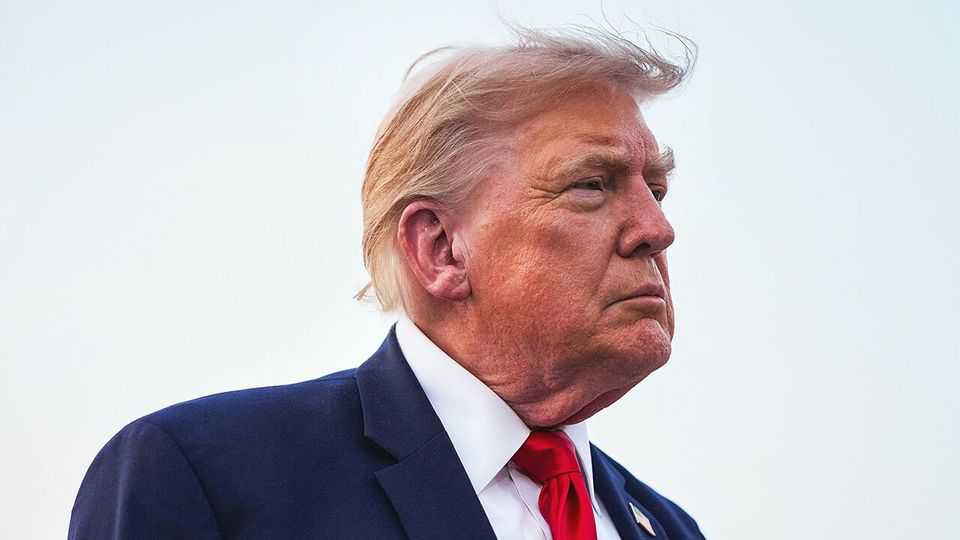
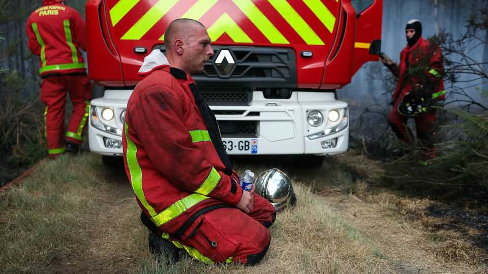

Politics

Jul 30th 2026
America and Iran returned to fighting after an informal five-day truce. After Iran attacked American bases in Jordan, Donald Trump retaliated, bombing targets in southern Iran. Iran’s insistence on controlling shipping in the Strait of Hormuz has caused negotiations to stall, though Mr Trump said he would “let them keep talking”. Meanwhile the Houthis, an Iran-backed Yemeni militia, struck tankers linked to Saudi Arabia in the Red Sea. The price of Brent crude, the global benchmark, rose to around $90 a barrel, having fallen to $84 on July 28th.
Mourners gathered in Washington, DC, for the funeral of Lindsey Graham, a Republican senator who died on July 11th. Israel’s prime minister, Binyamin Netanyahu, and Ukraine’s president, Volodymyr Zelensky, attended the ceremony after joining separate meetings with Donald Trump. Mr Graham was a strong supporter of both countries. Meanwhile senators advanced a bill, proposed by Graham, that would toughen sanctions on Russia and Iran.
Democrats in Maine chose Troy Jackson as their new candidate for a Senate race in November. The previous nominee, Graham Platner, dropped out following allegations of sexual assault (which he denies). Mr Jackson is a fifth-generation logger and former president of the Maine Senate. He will take on Susan Collins, a five-term Republican. Democrats need a net gain of four seats in the midterms for a Senate majority.
Andy Burnham, Britain’s prime minister, said he was willing to “spend political capital” to reform social care, calling the system “as unfair as American health care”. Mr Burnham wants to raise pay for workers in the social-care sector, which has struggled with recruitment in recent years. He did not rule out raising taxes to pay for his reforms. The prime minister also opened Number 10 North, a branch of 10 Downing Street, in Manchester.
Protests in Delhi and elsewhere in India led by the Cockroach Janta Party, an upstart youth movement, wound down, after it achieved its core aim, the resignation of Dharmendra Pradhan, the education minister, because of the leaking of important exam papers. For the government of Narendra Modi, the prime minister, which makes a point of not succumbing to pressure, the outcome was humiliating.
The Kumamoto area of Japan’s southern island of Kyushu was rocked by an earthquake of magnitude 6.8, killing at least 18 people. Some died in a shopping mall in the town of Kashima, where a gas explosion occurred 50 minutes after the quake.
Kassym-Jomart Tokayev, Kazakhstan’s leader, urged Vladimir Putin, Russia’s president, to “freeze” the war in Ukraine. Speaking at a meeting in Siberia, Mr Tokayev urged Mr Putin to negotiate because “the fraternal peoples of Russia and Ukraine are dying”. Kazakhstan is an important ally and trading partner for Russia. Mr Tokayev’s remarks are his most direct criticism of the war.
The Sudanese Armed Forces (SAF), Sudan’s army, launched an offensive against the paramilitary Rapid Support Forces (RSF) around el-Obeid, the capital of North Kordofan state. On July 26th the SAF said it had recaptured cities and towns along the road between the city and Khartoum, the national capital. That should enable the army to resupply its forces in el-Obeid.
Confirmed cases of Ebola in the Democratic Republic of Congo reached 3,360, according to the latest data from the ministry of health. Just under half that number died of the disease. The number of confirmed cases is nearly as high as the total recorded in Congo and Uganda during the last Ebola outbreak between 2018 and 2020.

Wildfires raged in France and Spain as temperatures in Europe soared. Emmanuel Macron, France’s president, said the blazes were the worst “since the second world war”. More than 350,000 people have been evacuated in the two countries. Dry weather, high temperatures and strong winds have caused the fires to spread quickly. Mr Macron warned that “the coming weeks will be tough.”
Russia’s Federal Security Service (FSB) charged Pavel Durov, the founder of Telegram, with “facilitating terrorist activity”. The intelligence agency accused him of allowing Ukrainians to “co-ordinate acts of sabotage and terrorism, mass killings and cyber-fraud” on the messaging platform. The FSB issued an international warrant for Mr Durov, who was born in Russia and is a citizen of France and the United Arab Emirates.
Jaroslaw Kaczynski, the leader of Poland’s hard-right Law and Justice (PiS) party, expelled Matuesz Morawiecki, a former prime minister. He also expelled from PiS more than 30 MPs who were Mr Morawiecki’s allies. Mr Morawiecki had set up a group to push for PiS to adopt policies that would help the party gain support among centre-right voters. Mr Kaczynski had ordered him to dissolve it or be expelled.
Romania shot down three Russian drones over its territory. Nicusor Dan, Romania’s president, said the incursions were “intolerable”. In recent months Russian drones have repeatedly crossed into Romania, which is part of NATO. In May a stray drone hit an apartment building in Galati, a city near the border with Ukraine, injuring two civilians.
Keiko Fujimori was sworn in as Peru’s president. She is the ninth person to lead the country in a decade. Ms Fujimori narrowly beat her left-wing rival in a run-off. She is a polarising figure, best known as the eldest daughter of the late Alberto Fujimori, an autocrat. She vowed to bring “order and national reconciliation” to Peru’s unstable politics.
Flávio Bolsonaro launched his campaign ahead of Brazil’s presidential election this October. Mr Bolsonaro is the son of Jair Bolsonaro, a hard-right former president, who is barred from seeking office for plotting a military coup in 2022. The senior Bolsonaro, who is under house arrest and banned from campaigning, delivered his endorsement via an AI-generated video. Right-wing candidates have won the past seven presidential elections in Latin America.
María Corina Machado, Venezuela’s leading opposition politician, announced she would not join American-backed talks with the Venezuelan government. She urged participants to clarify their “objectives, methodology and timeline”. America hopes the talks can help Venezuela prepare to hold free elections.